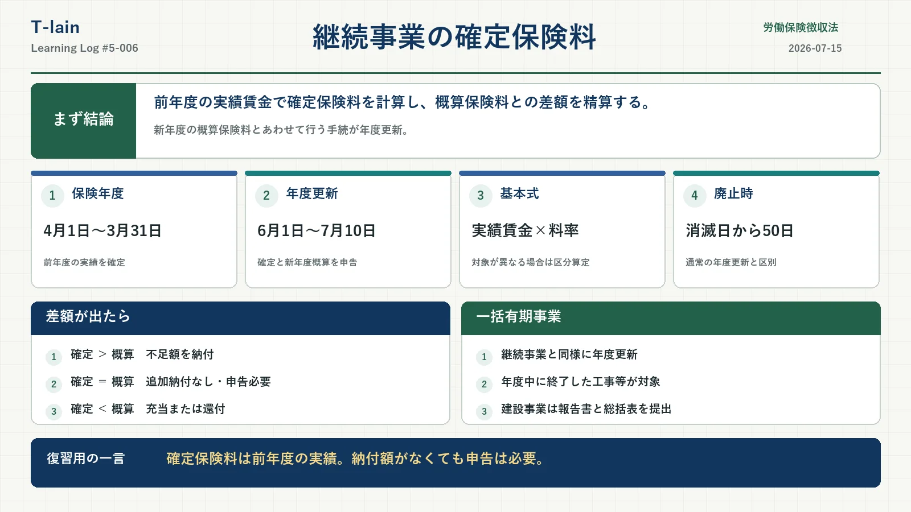

今日のテーマ
労働保険徴収法における、継続事業の確定保険料。
前年度の実績から保険料を確定し、すでに申告・納付した概算保険料との差額をどう精算するのか。年度更新、還付・充当、事業廃止、一括有期事業まで整理した。
まず結論
継続事業では、保険年度の終了後に実際の賃金総額から確定保険料を計算し、申告・納付済みの概算保険料との差額を精算する。
- 保険年度は毎年4月1日から翌年3月31日まで
- 申告期限は原則として次の保険年度の6月1日から40日以内
- 前年度の確定精算と新年度の概算申告をまとめて行う手続が年度更新
- 追加納付がなくても、確定保険料申告書の提出は必要
- 保険関係が年度途中で消滅した場合は、消滅した日から50日以内
年度更新とは
労働保険料は、保険年度の初めに賃金総額の見込額をもとに概算保険料を申告・納付し、年度が終わったあとに実際の賃金総額をもとに確定保険料を計算して精算する。
この前年度分の確定保険料の申告・精算と、新年度分の概算保険料の申告・納付をまとめて行う手続を「年度更新」という。
| 確認項目 | 内容 |
|---|---|
| 保険年度 | 毎年4月1日から翌年3月31日まで |
| 通常の申告期間 | 次の保険年度の6月1日から40日以内 |
| 通常の期限 | 7月10日 |
確定保険料の計算
一般的な継続事業における基本式は、次のように整理できる。
確定保険料 ＝ 前年度の賃金総額 × 労働保険料率
ただし、これは仕組みをつかむための基本式。労災保険と雇用保険で対象となる労働者の範囲が異なる場合は、それぞれの対象賃金総額と保険料率を用いて区分して算定し、その合計額を労働保険料とする。
- 労災保険料は、原則としてすべての労働者に支払った賃金が対象
- 雇用保険料は、原則として雇用保険の被保険者に支払った賃金が対象
- 特別加入者がいる場合は、特別加入保険料を別途算定する
賃金総額には、保険年度中に実際に支払った賃金だけでなく、支払うことが確定している賃金も含まれる。申告書へ記載する賃金総額は、原則として1,000円未満を切り捨てる。
概算保険料との差額を精算する
確定保険料を計算したら、すでに申告・納付している概算保険料と比較する。
| 比較 | 処理 |
|---|---|
| 概算保険料 ＜ 確定保険料 | 不足額を年度更新の期限までに納付する |
| 概算保険料 ＝ 確定保険料 | 追加納付も超過額もない。ただし申告書は提出する |
| 概算保険料 ＞ 確定保険料 | 超過額について充当または還付の処理を行う |
超過額の充当と還付
概算保険料が確定保険料を上回った場合、その超過額は翌年度の概算保険料や未納の労働保険料などへ充当される。
充当後に還付額が生じる場合や、事業廃止により新年度の概算保険料がなく還付額が生じる場合には、労働保険料・一般拠出金還付請求書を提出して還付を請求する。
還付を請求する場合は、原則として確定保険料申告書と併せて還付請求書を提出する。確定保険料申告書を提出しただけで、必ず自動的に還付されるわけではない。
納付義務と申告義務は別
納付する金額がないことと、確定保険料申告書を提出しなくてもよいことは別の話。
概算保険料と確定保険料が同額で、追加納付額がゼロであっても、実際の賃金総額に基づく確定保険料を申告し、概算保険料との精算を行う必要がある。
納付額がゼロでも、確定保険料申告書の提出は必要。
暫定任意適用事業を廃止した場合の問題
次の問題は誤り。
「労災保険の暫定任意適用事業の事業主は、事業を廃止した場合、概算保険料と確定保険料が同額で、納付すべき確定保険料がなければ、確定保険料申告書を提出する必要はない。」
答え：×
納付すべき不足額がなくても、確定保険料を申告して精算する手続は必要だから。事業を廃止した場合、翌年度の概算保険料を通常は申告しないため、「翌年度の概算保険料も申告するから」ではなく、「納付額がなくても確定申告と精算は必要」と整理する。
事業を廃止した場合
継続事業の保険関係が保険年度の途中で消滅した場合、確定保険料申告書の提出と不足額の納付は、保険関係が消滅した日から50日以内に行う。
| 場面 | 期限 |
|---|---|
| 通常の年度更新 | 次の保険年度の6月1日から40日以内 |
| 年度途中に保険関係が消滅 | 保険関係が消滅した日から50日以内 |
一括有期事業との関係
一括有期事業も、継続事業と同じように年度更新を行う。ただし、複数の建設工事または立木の伐採事業をまとめて一つの事業として扱うため、年度中に終了した事業を一件ずつ整理する必要がある。
たとえば、前年度中にA工事、B工事、C工事が終了した場合は、それぞれの事業期間、請負金額、賃金総額などを確認して年度更新の対象へ含める。年度末の時点で終了していない工事や立木の伐採事業は、その年度の申告対象へ含めず、終了した年度の年度更新で申告する。
| 書類 | 対象 |
|---|---|
| 一括有期事業報告書 | 建設事業・立木の伐採事業 |
| 一括有期事業総括表 | 建設事業 |
工事や伐採事業ごとに、事業の種類、期間、請負金額などを確認して申告する点が、一般的な継続事業との違いになる。
ここが狙われる
- 確定保険料は、前年度の実際の賃金総額に基づいて計算する
- 概算保険料と確定保険料との差額を年度更新で精算する
- 納付額がゼロでも、確定保険料申告書の提出は必要
- 保険関係が年度途中で消滅した場合は、消滅した日から50日以内
- 一括有期事業も年度更新を行う
- 一括有期事業では、年度中に終了した工事・立木の伐採事業が申告対象
- 一括有期事業総括表を提出するのは建設事業
○×で確認
| 問題 | 答え | 理由 |
|---|---|---|
| 概算保険料と確定保険料が同額なら、確定保険料申告書を提出しなくてよい。 | × | 追加納付がなくても、確定保険料の申告と精算は必要。 |
| 継続事業の保険関係が年度途中で消滅した場合、確定保険料申告書は保険関係が消滅した日から50日以内に提出する。 | ○ | 徴収法19条1項の期限。 |
| 一括有期事業では、年度末時点で継続中の工事もその年度の確定保険料へ含める。 | × | 年度中に終了した事業を申告対象とする。 |
| 一括有期事業総括表は、建設事業の場合に提出する。 | ○ | 立木の伐採事業では一括有期事業報告書を使用する。 |
今日のまとめ
継続事業の確定保険料は、前年度の実際の賃金総額をもとに計算し、すでに申告・納付した概算保険料との差額を年度更新で精算する。
不足があれば納付し、超過額があれば翌年度の概算保険料などへの充当や還付の処理を行う。追加納付額がゼロでも、確定保険料申告書の提出は必要。
一括有期事業では、年度中に終了した建設工事や立木の伐採事業を一件ずつ整理し、必要な報告書とともに年度更新を行う。
復習用の一言まとめ
確定保険料は前年度の実績による精算。納付額ゼロでも申告し、一括有期事業は終了した事業を整理する。